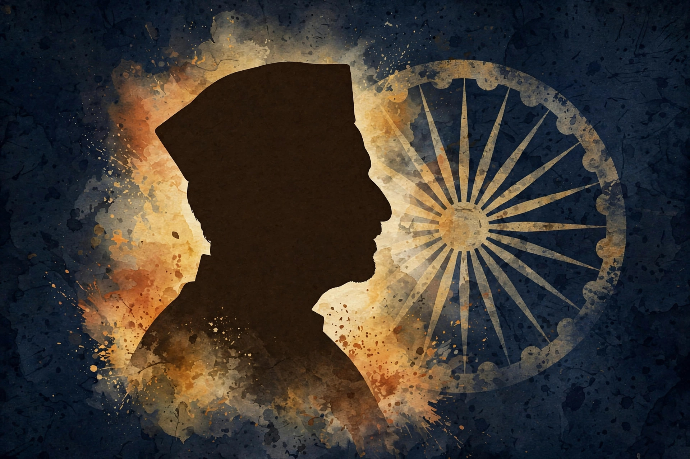
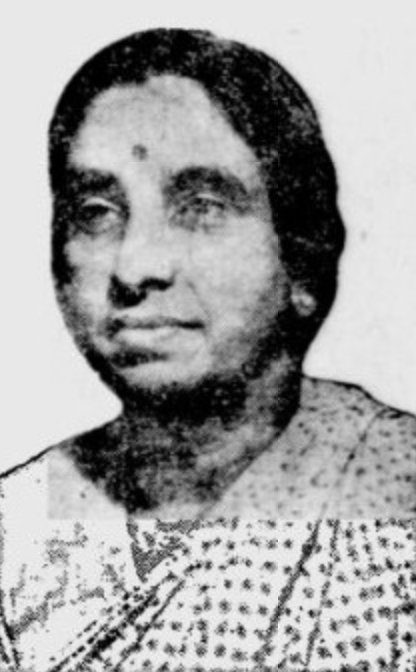

Ammu Swaminathan: Co-founder of the Women's Indian Association and Constituent Assembly member

Portrait: Wikimedia Commons, public domain
Ammu Swaminathan was born on 22 April 1894 in Anakkara, in the Palakkad district of Kerala, then part of the Madras Presidency. She received no formal education as a child. After marrying the lawyer Subbarama Swaminathan and moving to Madras, she taught herself English, and the marriage itself defied the prevailing caste norms of the time. The couple had four children: Govind Swaminathan, Lakshmi Sahgal (Captain Lakshmi, who would command the Rani Jhansi Regiment of the INA), Mrinalini Sarabhai, the celebrated dancer, and Subbaram.
She became politically active around 1914. In 1917 she co-founded the Women's Indian Association in Adyar, Madras, alongside Annie Besant, Margaret Cousins, Muthulakshmi Reddi and others. The organisation grew into one of India's foremost women's rights bodies, taking on child marriage and the devadasi system and demanding the vote for women. It made representations before the Montagu-Chelmsford Commission in 1917 and the Southborough Commission in 1918, pressing for equality of voting rights.
Swaminathan joined the Indian National Congress in 1934. She took an active part in the Quit India Movement of 1942 and was jailed in Vellore in 1943. She was a strong advocate of pro-women legislation: she supported the Sarda Act (the Child Marriage Restraint Act of 1929), the Age of Consent Act, and the Hindu Code Bills aimed at reforming succession, inheritance and marriage laws. As a member of the Lok Sabha she also pushed for maternity benefits for women.
In 1946 she was elected to the Constituent Assembly from Madras, becoming one of the very few women involved in drafting India's Constitution. She spoke on fundamental rights and directive principles, arguing for equal constitutional rights for women. After independence her public career continued: she served in the first Lok Sabha from 1952 (Dindigul) and the Rajya Sabha from 1954, undertook the Goodwill Mission to Ethiopia in 1948 and represented India at the UN Economic and Social Council in 1949, and presided over the Bharat Scouts and Guides from 1960 to 1965. She was honoured as "Mother of the Year" at the inauguration of the International Women's Year in 1975.
She died on 4 July 1978 in Palakkad, aged 84. Ammu Swaminathan helped build the legal and organisational foundations on which Indian women claimed their rights, yet her name is often eclipsed by the fame of her two daughters. Her own legacy is that of a foundational figure: an unschooled girl who taught herself English, built institutions, went to jail for independence, and helped write the Constitution.
Source: Wikipedia, Feminism in India, Constitution of India
Visuals: Archival portrait
Follow the daily five-post slate on Instagram.
Follow on Instagram